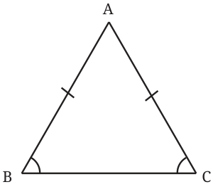
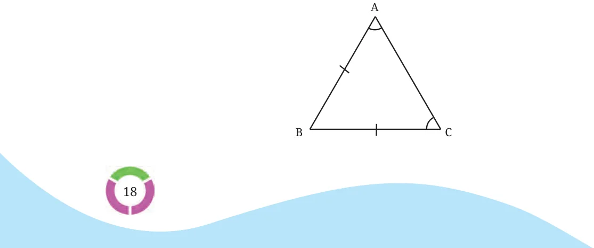

Equilateral triangles are those in which all the sides have equal lengths. What can we say about their angles? We can use the recently discovered fact that angles opposite to equal sides are equal.

The sides AB and AC are equal. So \(\angle B = \angle C\).

Similarly, the sides AB and BC are equal. So \(\angle A = \angle C\). So, all the three angles of an equilateral triangle are equal, just like their sides.
What could be their measures? As the three angles should add up to \(180 ^{\circ}\) , we have \(3 \times\) angle in an equilateral triangle \(= 180 ^{\circ}\) . So each angle is \(60 ^{\circ}\) .
Verify this by construction. Thus, just using the notion of congruence, we have deduced that the angles of an equilateral triangle are all \(60 ^{\circ}\) . Congruent Triangles in Real Life: Congruent triangles can be seen in various constructions and designs from ancient to modern times. Here are a few examples.
World-famous Louvre Museum World-famous Egyptian Pyramid of Giza in Paris
Dome design Rangoli design
Rabindra Setu or Howrah Bridge
Describe the congruent triangles you see in each picture.